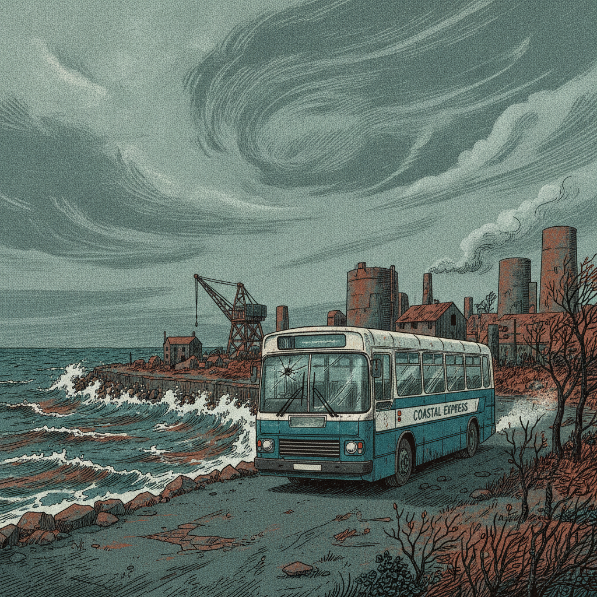
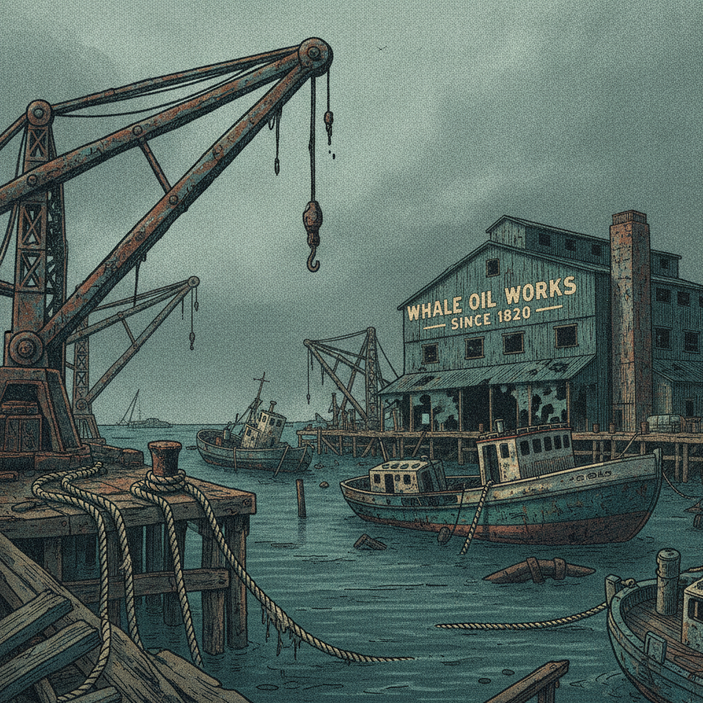
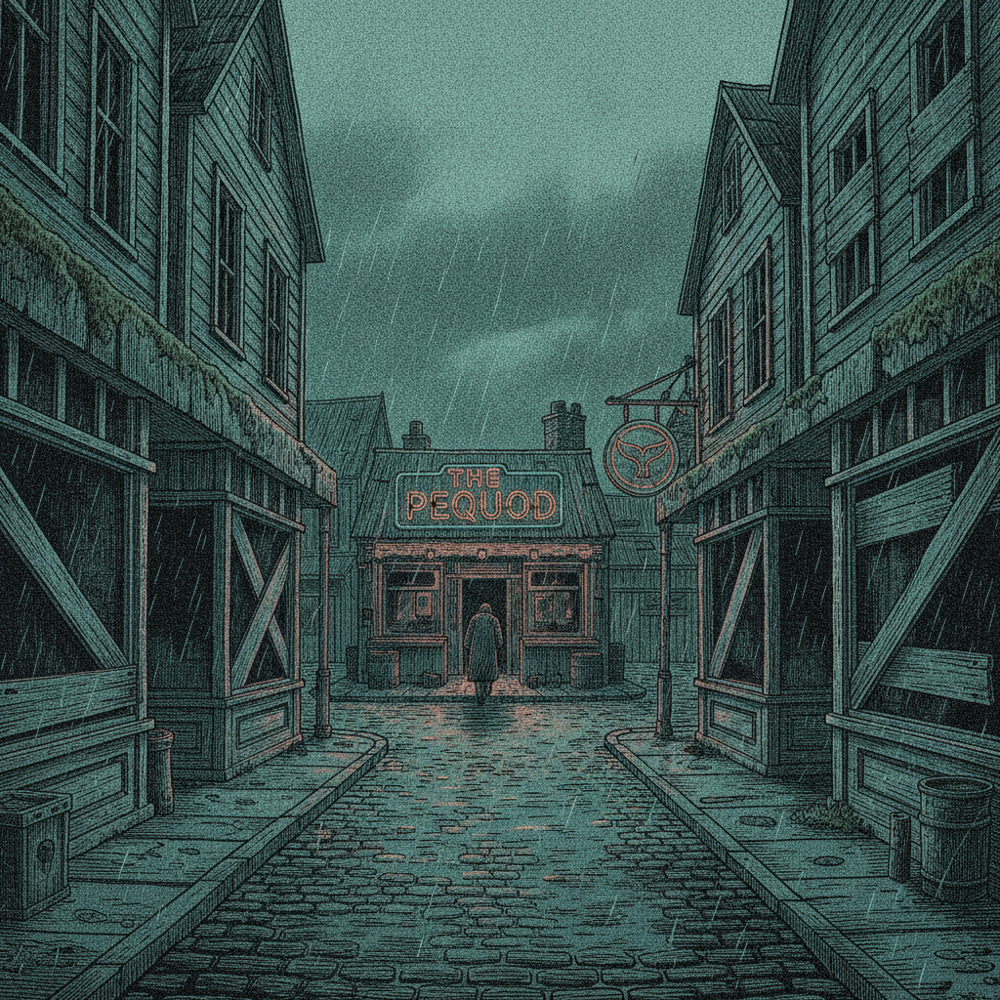
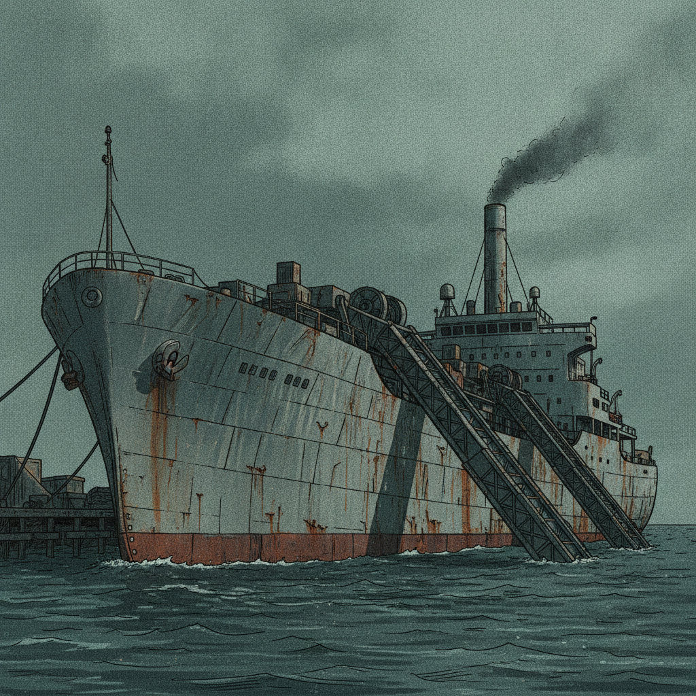
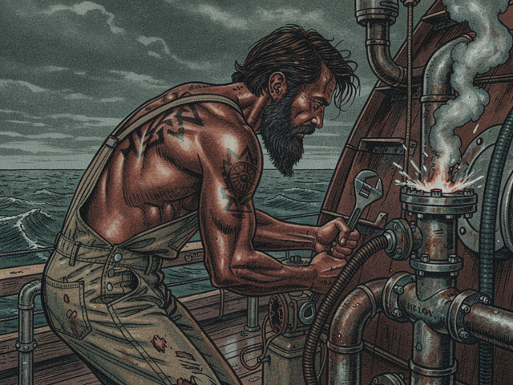
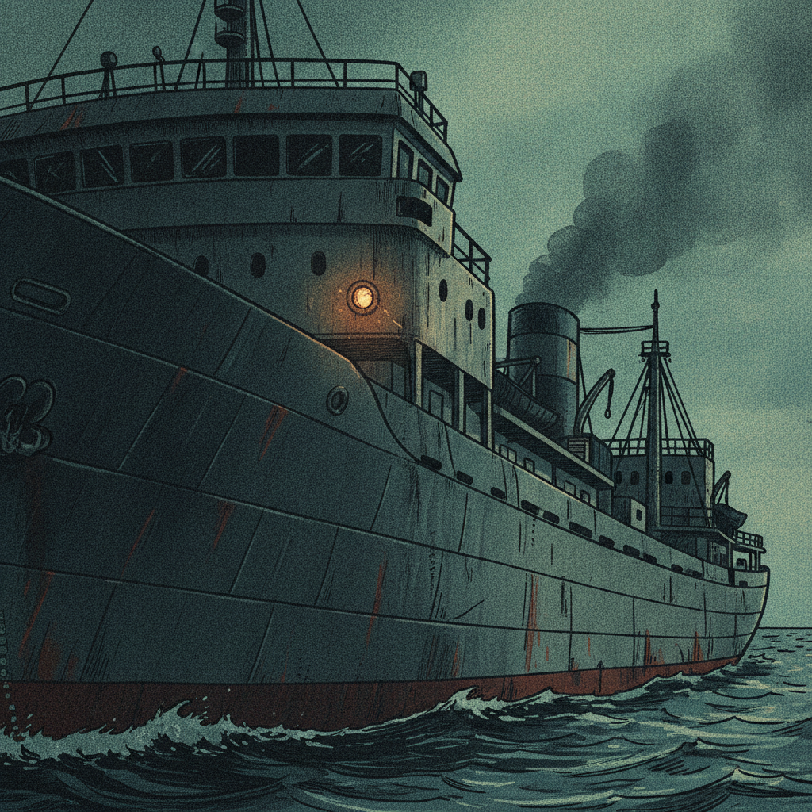

The bus coughed its last breath at the edge of New Bedford. Cold bit through my worn denim. October, 1985. The air reeked of salt, diesel, and something older – the ghosts of gutted fish, forgotten dreams. I pulled my duffel tighter, the cassette recorder against my hip a familiar weight.

The docks were a graveyard. Rust ate through everything: gantries, mooring lines, the hulls of half-sunk trawlers. Faded letters on an abandoned cannery read: "Whale Oil Works – Since 1820."
*Since.* Not *Until*.
A gull shrieked, slicing the grey sky.

I walked the cobbled street, past boarded-up storefronts and the flickering neon of a dive bar. The *Pequod*.

Down by Pier 17, she sat. A behemoth of steel, grey and scarred. Not a schooner, not a clipper. A factory ship. Rust bloomed on her plates. Her processing ramps, massive and brutal, angled towards the water. Smoke plumed from a stack, thin and dark.

A man bent over a series of pipes near the bow, wrench in hand. His back was a canvas of dark tattoos – jagged lines, geometric patterns that looked tribal, ancient. Oil-stained overalls. Skin the color of polished mahogany.
He grunted, tightening a valve. Steam hissed.
I stopped a few feet away. "Looking for the *Pequod*."
He straightened slowly. His eyes, dark and intelligent, met mine. They held an unsettling calm. A harpooner's face, carved by wind and salt, but framed by the grease of an engineer.
"You found her." His voice was deep, a low rumble. "You the new hand?"
I nodded. "Ishmael."
"Queequeg." He wiped his hands on a rag, though the oil seemed permanent. He gestured with his chin towards a narrow gangplank. "Captain's in his cabin. We sail on the tide."

The *Pequod* shuddered. A low vibration hummed up from her engine room. The air thickened with the smell of old iron.
Somewhere above us, a single light in a darkened porthole flickered. The bridge.
I couldn't see him, but I felt him.
Captain Ahab.
The *Pequod* was his weapon. We were just the ammunition.